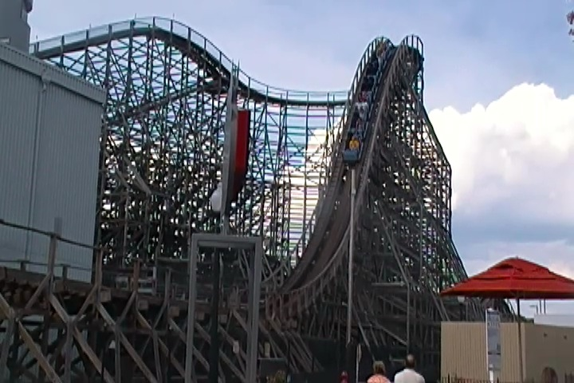
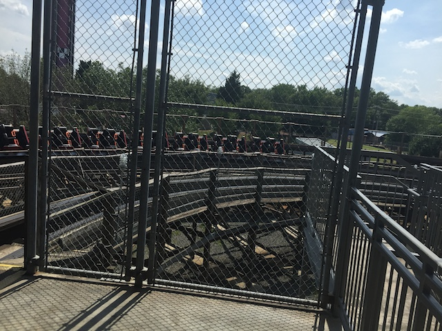
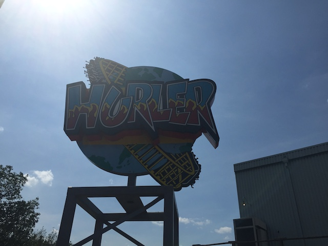

| |
Hurler Review

We're here at Carowinds and todays ride we'll be reviewing is Hurler. The parks full sized wooden coaster. So yeah. This is a coaster that does not have a good reputation in the coaster community. It frequently appears on many enthusiasts worst coasters list. And while I certainly don't like this ride, it's not THAT bad. To see more about how this ride is, hop in the cars, pull down the lap bar, and away we go. We roll out the station, around a turn, and begin to climb the lifthill. You get a decent view of Fury 325, but that's mainly it. We reach the top, head around a turn, get a decent view of Carowinds, and there's the ride. There's all that we're about to go through. *Sigh* Oh boy. Let's get this over with. We head down the first drop. You, it's not that bad. We gain some speed, and it's not rattling itself apart. Not bad so far. But of course, we hit a trim, so yeah. That takes away some of our speed. We then head through a low to the ground turn. And yeah. There's definetly some shuffling here. I can see how people think its rough here. So yeah. It's pretty crappy right now. We then head over a small airtime hill, and it's honestly not that bad. We dip down and go over another airtime hill. There's actually a little pop of airtime here. Sure, it's nothing special, but it's a fun moment in a coaster that reguarly gets lambasted as one of the worst rides ever. We head over another airtime hill, and while this one has no airtime, we at least are maintaining a good chunk of our speed. This leads into another low to the ground turn, and yeah. It's shuffling now. It's rattling. This is officially rough. Not horrendously rough, but rough nonetheless. We coast through some straight track, kinda lame. They really should've put a hill here. Head up a small hill, dip down, dip back up, and head down a small drop. You know, this is kinda dull right here. We head around another turnaround, still dull, and not super fast. But...at least it's got some headchoppers. And it's not trying to kill us. So YAY for that I guess. Head over another small hill, and we're still shuffling at this point. Just shuffle on, head right into that turnaround. Head up that small little hill, and into the brake run. So yeah. That was Hurler. It sucks. It's fairly rough, and not super fast or exciting. But for as sh*tty as it is, it wasn't as bad as other enthusiasts claimed. It did have a little bit of speed, and even a pop of mild airtime at one point on the ride. So yeah. I may not recommend Hurler, but at least it's not that bad of a ride. Though I really hope that it gets the RMC treatment the same way that the Kings Dominion Hurler did. Seriously. Twisted Timbers is awesome! =)
4/10
Location: Carowinds
Opened: 1994
Built by: International Coasters
Last Ridden: June 24, 2016
Hurler Photos


Home
|